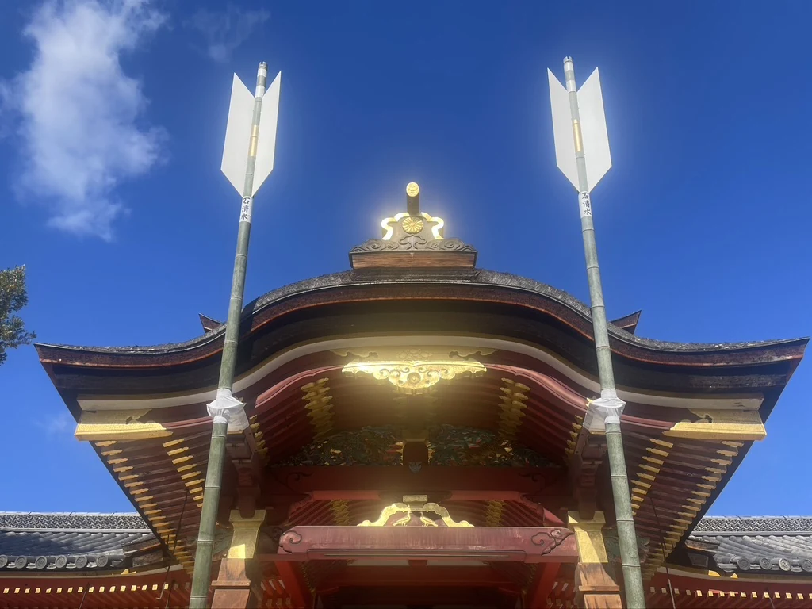

One peaceful home base to explore Kyoto, Osaka, Nara, and Uji.
From Taka’s Notebook
When I was younger, I traveled as much as I could. These days, I travel a little more slowly. Here are a few things I’ve learned along the way.
People often ask me,
“Why do you recommend staying between Kyoto and Osaka?”
The answer probably comes from the way I like to travel.
When I was younger, I moved from hotel to hotel, trying to see as many places as possible.
These days, I much prefer returning to the same place every evening.
Not because it is easier, but because it allows me to understand a place more deeply.
When you have somewhere that feels a little like home, your journey becomes much more relaxed.
And I think that is one of the nicest ways to experience Japan.
A home in the town where we grew up.
Kyoto and Osaka are both wonderful cities.
But after welcoming guests from around the world, we began to notice
something.
Many travelers are not visiting only Kyoto or only Osaka.
One day, they go to Kyoto.
Another day, they explore Osaka.
They may also visit Nara or spend a quiet afternoon in Uji.
We have also seen many travelers move from one hotel to another with
large suitcases each time.
If you stay between Kyoto and Osaka from the beginning, you do not
need to keep moving your luggage between hotels.
Every hotel change also means another check-in and check-out. It
takes time to learn where the nearest station, shops, and restaurants
are.
That time could instead be spent exploring a little longer or simply
resting at your accommodation.
You can find practical travel times from Hirakata on our
Access page.
Everyday Japan Beyond the Tourist Areas
The Showa House is in Hirakata, a quiet residential city between
Kyoto and Osaka.
Hirakata is not a famous tourist destination.
For us, that is one of its greatest qualities.
You will rarely see groups of tourists walking through the
neighborhood.
Instead, you may see children coming home from school.
Neighbors taking care of their gardens.
People cycling to the supermarket.
Others enjoying an evening walk before sunset.
These are ordinary scenes from daily life in Japan.
Because there are so few tourists, Hirakata offers a different view
of the country—not Japan prepared for visitors, but Japan as people
live it every day.
Life here moves at its own quiet pace.
Quiet local paths make everyday moments part of the journey.
When we travel overseas, we also enjoy seeing more than famous
landmarks.
We like walking through residential streets, visiting local markets,
and noticing the small details of everyday life.
That is why we believe the simple scenes around Hirakata can also
become part of your memories of Japan.
A quiet riverside route offers a glimpse of everyday life beyond the major sightseeing areas.
A Place I Recommend — Iwashimizu Hachimangu Shrine
It may not be as well known internationally as the temples of central
Kyoto, but it is one of Japan’s most historic Hachimangu shrines.
It is a peaceful place surrounded by the forest of Mount Otokoyama.
If you have enough time, I recommend walking up the mountain instead
of taking the cable car.
The walk takes about 20 minutes at a relaxed pace.
For me, the walk itself is part of the experience. The path leads
slowly through the trees, with sunlight passing through the leaves as
you make your way toward the shrine.

Architectural details emerge gradually as you climb through the wooded shrine grounds.
There is also a cable car for those who prefer not to walk. Please
check the shrine’s official website for the latest service
information before visiting.
The atmosphere is very different from the busy streets of Kyoto and
Osaka.
It is a place where you can slow down and enjoy a quieter part of the
region.
Sometimes the place you did not originally plan to visit becomes the
one you remember most.
For me, Iwashimizu Hachimangu Shrine is one of those places.
Iwashimizu Hachimangu, reached by a short train ride and cable car from Kuzuha.
Choosing a Local Base
Of course, there are trips for which staying in Kyoto or central
Osaka is the best choice.
If you plan to spend every day and evening in only one of those
cities, staying there may be the most convenient option.
But perhaps you would like to enjoy both Kyoto and Osaka.
Perhaps you would also like to visit Nara or Uji.
Perhaps you would prefer to return to a quieter place at the end of
the day.
And perhaps you would like to see a little of everyday life in Japan.
If that sounds like your kind of journey, staying between Kyoto and
Osaka may give your trip a different rhythm.
Choosing a traditional home in a residential area can add another
layer to the trip: the accommodation becomes a place to notice local
routines rather than simply somewhere to sleep between attractions.
When we travel, we enjoy more than famous sightseeing spots.
We like walking through markets, exploring residential
neighborhoods, and visiting small shops used by local people.
When we look back on a journey, these simple moments are often the
ones we remember most clearly.
This combination of practical day trips and ordinary local moments
is what makes a base between Kyoto and Osaka worth considering.
The Showa House is one convenient base for exploring Kyoto, Osaka,
Nara, and Uji while returning to the quiet streets of Hirakata.